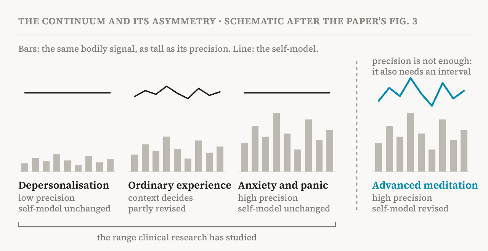
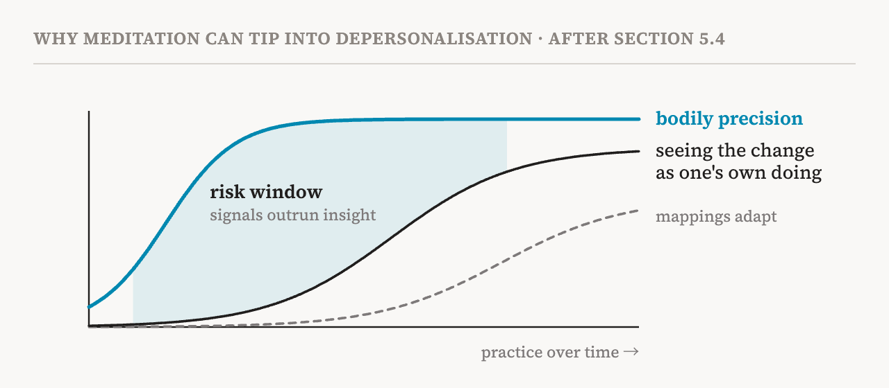

In November 2026, the Meditation Research Program at Massachusetts General Hospital posted a preprint on its website titled "The art of permeability: A computational distinction between depersonalisation and advanced meditation". Its four authors are Fedal Saini of Massachusetts General Hospital and King's College London, Hagar Tal of Maastricht University, Ruben Laukkonen of Oxford, and Matthew Sacchet, who leads the program. Laukkonen also co-wrote "A beautiful loop: An active inference theory of consciousness", which is in my atlas, and he is one of the authors of "The entangled loop: Emotion, interference and hierarchy in the architecture of consciousness". The paper proposes a theory and reports no new data, and as a preprint it has not yet been peer-reviewed.
It starts from an odd fact: two very different groups of people describe nearly the same experience. In a study of 204 cases of depersonalisation disorder, one patient said of their own voice and body: "it is mine, it is me, it just doesn't feel like it". A long-term meditator described a body "so spread that it's very difficult to know where it is", and a point of view that was "like the world looking, not me looking". In both, the quiet, ordinary sense of being a self inside a body fades. Yet for the first group this is distressing alienation, while for the second it comes with reports of clarity, equanimity and well-being.
The authors explain both as one dial turned in opposite directions. This piece reads the paper closely. It covers what the dial is, why turning it up is not the reverse of turning it down, why one experience feels imposed and the other chosen, why meditation sometimes produces depersonalisation, and what the account suggests about measuring minds, including artificial ones.
A self built from the body
The paper starts from a view common in neuroscience. The most basic layer of the self is the sense of being in a body, and that sense is built from interoception, the stream of signals about the body's inner state, such as the heartbeat, breathing and the gut. In predictive accounts, the brain does not simply receive these signals. It predicts them, and what travels upwards is mainly the error: the difference between what the body was expected to do and what it did.
How much an error counts is set by its precision, the brain's confidence that the signal is reliable. A precise error can revise beliefs higher up; an imprecise one is ignored. Ordinary life balances the two, updating when a signal is informative and damping it when it is noise.
Behind this sits allostasis. Unlike homeostasis, which corrects the body only after it drifts from a set point, allostasis is the brain's anticipatory regulation of the body: keeping it viable by preparing for demands before they arrive. On this view, regulating the body is what the self-model is for. The predictions through which the brain manages the body are felt as affect, and they also draw the line between the organism and its world. So a change in how bodily signals are weighed changes what it feels like to be a self.
Depersonalisation: closing the channel
Mild, passing depersonalisation is common, especially under stress or fatigue. The chronic form, depersonalisation disorder, often follows anxiety and panic, and it frequently comes with post-traumatic stress, depression or schizophrenia. The body is recognised but no longer fully felt, and perception, though intact, loses its colour. The body's automatic responses to emotional events are blunted, yet the ability to sense the body is not. In the brain, prefrontal control regions are more engaged and the anterior insula, a hub for bodily signals, is less so.
Earlier active inference accounts place the problem at different heights of the hierarchy. Anil Seth and colleagues place it where bodily signals are explained: imprecise predictions lead to bodily errors being suppressed across the board, and the world loses its felt reality while looking the same. Philip Gerrans moves it to ownership: an experience that fails to produce the expected feeling is disowned and felt as alien. George Deane and colleagues move it higher still, to the sense of control: when error keeps rising whatever the system does, its confidence in its own actions collapses.
Saini's own earlier account, interoceptive silencing, takes up two questions the others leave aside: why depersonalisation can start when nothing is wrong, and why it lasts. The answer is paradoxical arousal. The body signals high threat while the world shows no danger, and the system has no inference that can reconcile the two. So it turns down the precision of the bodily signals themselves. The alarm keeps ringing, but nobody upstairs is listening. The higher beliefs stay intact, but they are cut off from the evidence that would ground them.
Meditation: opening it
Now the other side: meditation. By advanced meditation the paper means later-stage practice whose aim is no longer calm or attention for its own sake, but investigating how experience is put together. Within it, the paper focuses on deconstructive practices, which take the structure of experience itself as the object of inquiry. Constructive practices that cultivate qualities such as loving-kindness, and devotional practices such as prayer, may work differently, and the paper sets them aside.
The first ingredient, in computational terms, is a change in where precision sits. Sustained attention to immediate sensation raises the precision of low-level signals, especially those from inside the body, and lowers the weight of the high-level, autobiographical beliefs that hold the narrative self together. Bodily arousal is then met before it is labelled, as bare sensation rather than as "anxiety" or "excitement".
The second ingredient is meta-awareness: watching the mind's own modelling as it happens. Work by Lars Sandved-Smith and colleagues models it as learning to control the precision of one's own attention, and Laukkonen and colleagues' 2025 paper "A beautiful loop: An active inference theory of consciousness" extends it to the whole field of precision, which they call epistemic depth, the capacity to know what one knows. Once these capacities are developed far enough, precision can be withdrawn even from the beliefs that hold the narrative self in place. The literature calls this stage defabrication.
One dial, two poles
The paper's central claim puts both experiences on one axis, which the authors call the embodied constraint on self-modelling: how strongly moment-to-moment bodily errors reach, and revise, the beliefs that make up the self. Their word for this is permeability.
At one pole, depersonalisation is a defensive strategy. When the brain's learned mappings keep reading bodily arousal as a threat that nothing can be done about, every fluctuation renews a demand for control that cannot be met. Turning down the precision of the incoming channel ends that demand. The authors also explain why the brain takes this route. Relearning the mappings would be slow. Lowering the weight of the high-level beliefs would also work, but that needs control over one's own priors, whereas turning down the gain on a signal is something the brain does all the time. With repetition, the move becomes a habit and then a chronic state. And because the channel is closed, the faulty mappings never meet the evidence that could correct them. The defence protects exactly what is broken.
At the other pole, in safe conditions and under little demand, the same machinery runs the other way. Bodily errors get more precision and shape inference at many levels. Even mappings that serve ordinary life well are coarse, because they are built for fast action. Exposed again and again to evidence they normally filter out, they can become finer.
| Depersonalisation | Advanced meditation | |
|---|---|---|
| Starting point | Learned mappings read bodily arousal as threat | Mappings good enough for ordinary life, in safe conditions |
| What happens to precision | Bodily errors are turned down at the entrance | Bodily errors are turned up; high-level beliefs relax |
| The self-model | Stable, unrevised, detached | Revised moment to moment, at times loosened |
| What awareness reaches | The change, but not what produces it | The processes that build the self |
| How it feels | Imposed and unreal | Something one is doing and could do otherwise |
| The brain | Lateral prefrontal cortex up, anterior insula down | Early practice: anterior insula up, medial prefrontal cortex down; in later stages, both quieter |
Turning it up is not the reverse
The most interesting part of the paper is an asymmetry. Lowering bodily precision is enough to reach depersonalisation, but raising it is not enough to reach the meditative state.
Anxiety and panic show why. There, bodily signals already have high precision, and small changes carry enormous weight. Yet the self-model is not revised. Arousal arrives already labelled as threat, and a corrective response, such as fleeing or trying to calm down, fires at once and confirms the threat before any contrary evidence can arrive. So the authors separate two things that are easy to run together: a signal reaching the top of the hierarchy, and that signal changing the beliefs it reaches. Permeability, in their sense, means only the second.

What revision needs as well is an interval: a window in which bodily evidence reaches the higher mappings while the usual reaction is held back. Panic closes the window after the signal arrives; depersonalisation closes it before. Meditation, the authors argue, is training in keeping it open. Sitting still works as a strict constraint on movement, so bodily changes can be sampled without consequence. Deliberately not reacting widens the window further. And as meta-awareness matures, the practitioner no longer needs stillness to hold it open: watching their own inference does that.
Seeing the process, or only the result
The two experiences also feel different, and the paper explains this with the philosopher Thomas Metzinger's distinction between transparency and opacity. A process is transparent when only its content appears in experience, and opaque when the process itself becomes visible.
In depersonalisation, the person notices the change, which is why patients describe an "as-if" quality and the feeling of being a detached observer. They do not believe their perception is literally false. But they cannot see what produces the change. They monitor themselves anxiously, yet the monitoring runs on a self-model that has been cut off from bodily evidence and has little to work with. The result is partial opacity: the change is visible, but its mechanism is not. So it is experienced as a fact about how things now are, an imposition with nothing to hold on to.
In advanced meditation, the opacity reaches the processes themselves. The practitioner sees the self-model being built, and at the most refined stages even the sense of being the subject of experience shows itself as something constructed. The same loosening feels like freedom when you can see yourself doing it, and like loss when you cannot. The change then appears as something the system is doing and could do otherwise, and that is what lets it be sustained and deepened rather than feared.
When meditation goes wrong
The asymmetry has a practical edge. The paper counts depersonalisation among the most often reported adverse effects of meditation, with estimates from 9 to 25 per cent depending on the population and the method. The surveys behind the figures near 25 per cent, though, counted unpleasant or unwanted meditation experiences of any kind, not depersonalisation alone, so the rate for depersonalisation itself may be lower. The paper explains why with timing. Practice raises bodily precision quickly. The reflexive capacity to see that change as a process grows only with long training, and the higher mappings that integrate bodily signals change more slowly still.

Early on, these three can fall out of step. Bodily signals arrive with new force, the practitioner cannot see that their own reweighting produced them, and the existing mappings cannot make sense of the transformed state. The system then reaches the reflexive configuration of depersonalisation from the opposite side. It treats the change as a problem to fix, and acts to remove the feeling rather than to learn where it came from. When that fails, suppression is the next move available. Reviews suggest that the risk is greatest with practice that sets out to deconstruct the self, done at high volume and intensity, without balancing practices, and without a framework that lets the experience be read as benign. Someone whose mappings already read strong bodily signals as threat is especially exposed. The authors call this overreaching, like the injury that follows training which outpaces the body's adaptation.
The missing upper half
The discussion then turns to clinical science. If the dissociative loop protects faulty mappings from correction, recovery needs bodily evidence back. But readmitting that evidence while the mappings are still miscalibrated simply triggers the old threat response, and where the habit of dissociation is strong, the system falls back into it. What is needed is not more bodily evidence, but the interval. The order of the steps matters, and meditation offered without that scaffolding could reinforce the very dissociation it is meant to relieve.
The authors also argue that clinical neuroscience has mapped only half of the continuum, from the suppression of depersonalisation to the hyperreactive states of panic and trauma. By studying people defined by a failure of regulation, it has treated ordinary functioning, the absence of symptoms, as the upper limit of what bodily regulation can do. The configuration in which strong bodily evidence revises the self without triggering defence remains largely unmodelled, and advanced meditators are where it can be studied.
The measurement tools share this blind spot. Standard interoception tests ask whether people can detect a signal, for example by counting their own heartbeats. People with depersonalisation do as well as everyone else, and how severe their symptoms are does not track their scores. Experienced meditators also match non-meditators in accuracy, and differ mainly in how confident they are. In both cases, the difference the theory cares about, whether bodily evidence revises higher beliefs, is not what the tests measure. The authors suggest a different kind of test: track how the predictions tied to a bodily signal change when the outcomes they anticipate repeatedly fail to arrive.
Points to weigh
First, "computational" here means a framework, not a model. The paper builds no simulation and fits no data, and its figures are, in the authors' own words, illustrative. It says that the timing mismatch could in principle be modelled formally, but it does not model it. The claims hang together and could be tested in outline, but none is tested here.
Second, much of the neural evidence is thin or early. The fronto-insular picture of depersonalisation rests on imaging and stimulation studies. The meditation side draws mainly on early-stage practice, a brain-stimulation study reported as a first investigation, and an intensively sampled case study of a single practitioner. The authors themselves present the insula–prefrontal axis as a plausible substrate, not an established one.
Third, the scope is deliberately narrow. The paper treats depersonalisation as a phenomenon rather than as the full diagnosis, setting aside derealisation, and it covers only deconstructive meditation. The ethical, attitudinal and relational context that it says practice needs is, by its own account, still to be modelled.
Fourth, the account leans on the authors' own recent work, including Saini's interoceptive silencing model and reviews from Sacchet's program. That is natural for a synthesis, but it makes independent tests all the more important.
Finally, one comparison may do less work than it seems to. The paper says that meditation and depersonalisation draw on the same fronto-insular architecture. But nearly all bodily regulation runs through that circuitry, so the overlap alone says little. The stronger claim is that the two change it in opposite directions, and showing that needs evidence that follows the same people over time.
What it means for AI
Read against AI, the paper raises one question. When a person says "I'm anxious", the words do not come straight from the body: they come from the self-model's interpretation of the body's signals. A language model can say "I'm anxious" too. So what, in a model, sits where the self-model sits? We do not yet know which information inside a model, through what computation, becomes those words, or whether anything in between deserves to be called a self-model. To know how far we can trust what an AI says about itself, finding out what plays the part of a self-model in a model will matter more and more. There are leads. In my workshop paper, What the Model Kept to Itself, the models' internal scores told their right answers from their wrong ones fairly well, yet the confidence they stated was usually 95, right or wrong: the inner signal barely reached what the model said about itself. The introspection studies covered in part 32 of AI from the Inside, Can Models Explain Themselves?, point at the same question.
“Losing the sense of self can be an illness or an insight. On this account, the difference is whether you can see yourself letting go.”